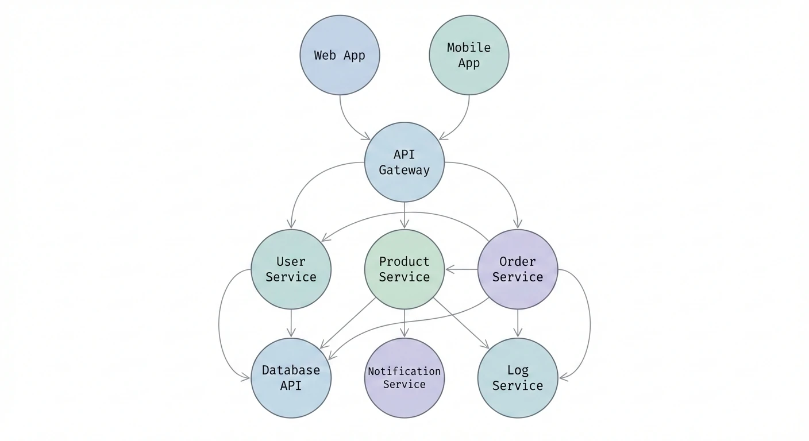

Roni Kobrosly Ph.D.'s Website
written by Roni Kobrosly on 2026-05-14 | tags: engineering personal updates
Life is so large and overwhelming and fluffy and indeterminable. These are tough times. I find a lot of comfort in spending some of my free time studying math, logic, and engineering. It feels like I'm reading the secret language of the universe, and it's crisp, internally-consistent, and explainable ones and zeroes...
Read on... (1327 words, approximately 7 minutes reading time)written by Roni Kobrosly on 2026-05-05 | tags: agentic ai food
For years my mother had a secret squirreled away on her Dell machine 💻. She was assembling a collection of her favorite custom recipes and recipes from friends in a large Word document. This wasn't a handful of recipes; there were 100+ in total.... (read more)
(322 words, approximately 2 minutes reading time)written by Roni Kobrosly on 2026-04-05 | tags: agentic ai generative ai statistics simulation economics
To be totally honest with you, I have no fucking clue what is going on with the cost of AI inference. I hear partially-informed murmurs almost every day. Is it getting cheaper because of improvements in this new field of "Inference Engineering" or in GPUs? Something about TPUs? Or are our complex reasoning models and larger context windows resulting in greater costs? Maybe the improvements and greater token throughput balances out in the end? 😅 What does it mean, precisely, when we say "AI costs are subsidized"?
Read on... (2548 words, approximately 13 minutes reading time)written by Roni Kobrosly on 2026-02-04 | tags: generative ai images
My father has an old picture of my grandfather that he loves. Unfortunately it's blurry and artifacted. For the last five years, at the end of each year, I've taken a few hours to see if cutting edge tech tools for digital image restoration could improve it. They failed miserably until EOY 2025...
Read on... (323 words, approximately 2 minutes reading time)written by Roni Kobrosly on 2026-02-02 | tags: observability engineering open source machine learning

Let's say you've fully instrumented your organization's applications with OpenTelemetry. You're capturing tons of useful metrics, trace data, and service attributes. Congratulations! Will incident time to recovery drop? Let's think through this before you celebrate too much...
Read on... (2489 words, approximately 13 minutes reading time)